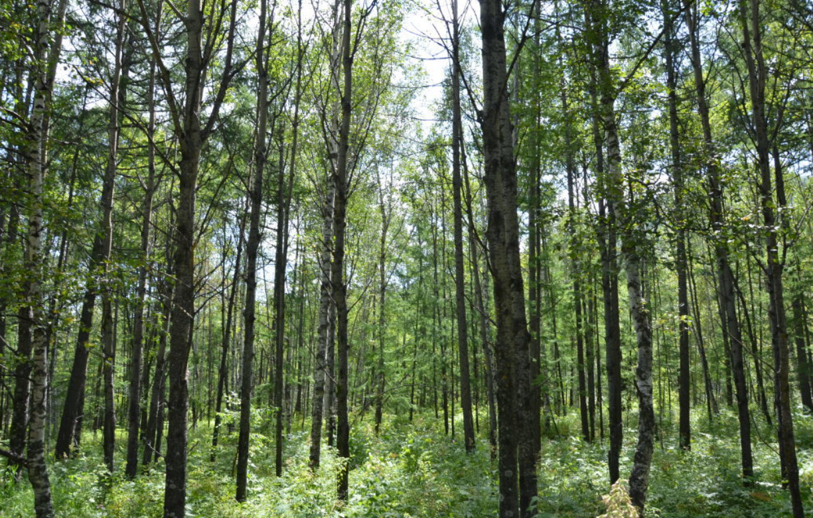

云上党 · 林场资源专题地图
上党区国有雄山森林场分布专题图层，支持区域描绘与编辑。
护林员图层已显示
点击地图添加边界点，双击完成绘制
长治市上党区国有雄山林场
生态公益林 | 经营总面积 40526亩
2701.76
经营总面积
公顷
86289
活立木蓄积
立方米
64%
森林覆盖率
18
专职管护人员
人
6
管护站
个
54
行政村区
个
经营区域
西火镇 / 南宋镇 / 荫城镇 / 八义镇 / 北呈乡 / 苏店镇
公益林分布图

点击图片放大查看
基本情况
长治市上党区国有雄山林场始建于1962年，其前身为"大南林区"(解放初)，1962年定名"小林区"(解放前)为国营长治县雄山林场，2019年更名长治市上党区国有雄山林场，场部设在上党区荫城镇桑梓一村东。
经营区划分为6个乡镇54个行政村区。下设雄山、中心、师庄、南宋、西火、五龙山6个管护站。差补事业单位，隶属于长治市上党区林业局。2017年根据中央、省、市、县颁发的国有林场改革方案，我场进行了全面的改革，由原先的差补事业单位变更为全额事业单位，经费由区财政负担。
现有在职职工8人，退休职工9人，聘用专职管护人员18人，并与管护人员签订管护协议。森林经营总面积2701.76公顷。其中;国有2057.53公顷，托管集体644.23公顷。
森林资源数据
- 有林地：2701.62公顷
- 疏林地：144.87公顷
- 灌木林地：12.69公顷
- 未成林造林地：559.81公顷
- 无立木林地：222.52公顷
- 宜林地：31.19公顷
- 辅助生产用地：0.78公顷
- 国家公益林：1926.67公顷
- 省级公益林：644.23公顷
经营方针
以改善生态，并建设生态文明为总任务，以全面深化改革为总动力，以建立系统完备的森林资源保护体系，实现可持续发展为总目标。发挥各管护区的森林功能和价值，形成分类经营、分区管理的基本架构，完善森林保护体系，发挥森林资源的多种效益。
经营目标
- 通过荒山造林、封山育林等经营措施使有林地面积增加
- 加强森林资源管理，通过抚育，提高林分质量和单位面积产量
- 加强森林资源管护，完善资源管护方法，严格考核制度，确保不发生重大的偷砍滥伐、乱捕乱猎、森林火灾，乱占林地和森林病虫害蔓延成灾
- 加强林业产业建设
- 提高职工生活水平
- 发展现代林业